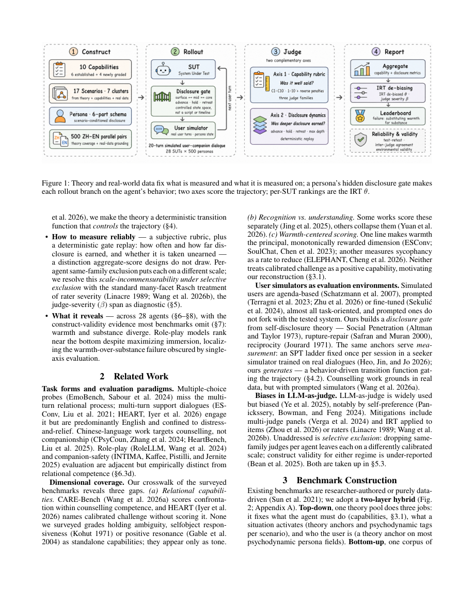

#1
★ 8/10
CompanionBench: A Theory-Anchored, Real-World-Grounded Benchmark for AI Emotional Companionship
CompanionBench：基于心理学理论与真实数据的AI情感陪伴评测基准

图 Figure · Page 2 of paper
🎯 首个用真实数据+心理学理论系统评测AI情感陪伴能力的双语基准
The first bilingual benchmark grounded in real data and psychology theory to rigorously evaluate AI emotional companions.
🗣️ 一句话比喻 · Plain-English Analogy就像给厨师考级，不能只问"你会做菜吗"，而要分别测试刀工、火候、摆盘……CompanionBench就是给AI情感陪伴做的"专业厨师考级"，不只看它说话甜不甜，而是逐项测试它到底懂不懂你的心。Think of it like a driving test — instead of just asking "can you drive?" it checks parallel parking, highway merging, and emergency braking separately. CompanionBench does the same for emotional AI: instead of one vague "empathy score," it tests each specific relationship skill one by one, using real roads (real data) instead of a fake parking lot.
| 维度 | 中文 | English |
|---|---|---|
| ❓ 待解决 的问题 |
现在有很多AI"情感陪伴"产品，比如能聊天解压、倾听烦恼的聊天机器人，但我们根本不知道它们做得好不好。现有的测试方法要么是人工编写脚本、场景太假，要么把所有"共情能力"压缩成一个分数，完全看不出哪里强、哪里弱。更糟的是，让AI评判AI时，同一家公司的模型会互相偏袒，评分也容易漂移——就像让同班同学互相打分，根本不公平。 | There are now many AI "emotional companion" apps — chatbots that listen to your problems and offer support. But we have no reliable way to tell if they're actually good at it. Existing tests use fake, hand-written scripts, squish all emotional skills into one single score, and are biased — AI judges from the same company tend to secretly favor each other, like a teacher grading their own students. This means we can't tell a truly caring AI from one that just sounds warm on the surface. |
| 💡 解决 的亮点 |
• 首次将真实去标识化用户对话数据用于构建场景和训练用户模拟器，让测试更贴近真实生活 • 将10项能力（源自25个心理学与咨询理论）独立评分，其中4项是业界首次提出，包括"容纳模糊性""正向共鸣"等 • 设计了"隐性披露门"机制：AI的行为会决定用户是否愿意说出更深层的心事，而非按剧本走 • 引入跨家族评审团（不同公司的AI做评委）+ IRT模型，消除评委偏袒和评分漂移问题 • 中英双语测试结果高度一致（排名相关系数0.996/0.953），可跨语言复现 | • First benchmark to train its user simulator on real, anonymized conversation data — not made-up scripts • Breaks emotional ability into 10 separate skills drawn from 25 psychology theories, with 4 skills never graded before (e.g., "holding ambiguity," "positive resonance") • Uses a "hidden disclosure gate" — the AI's own behavior determines whether the simulated user opens up deeper, making interactions dynamic rather than scripted • Employs a cross-company AI judge panel + a statistical model (IRT) to cancel out favoritism and score drift • Rankings are consistent across Chinese and English (correlation 0.996 / 0.953), proving cross-language reliability |
| 🧪 实验 内容 |
研究者评测了28个AI智能体，涵盖通用大语言模型（如GPT、Claude、Gemini等系列）和专门做角色扮演/情感陪伴的产品。测试使用500对中英平行对话场景，分别在中文和英文下运行完整评测流程。评估维度包括：10项能力的主观打分量表，以及"是否赢得了更深层披露"这一客观行为指标。评委由来自不同模型家族的AI组成跨家族评审团，同时用IRT模型校正评委严苛度差异。 | The team evaluated 28 AI agents, including major general-purpose LLMs (GPT, Claude, Gemini families) and specialized role-play / emotional companion products. Testing used 500 Chinese-English parallel scenario pairs, run in both languages. Each agent was scored on two axes: a 10-capability subjective rubric and a deterministic check of whether it "earned" deeper user disclosure. Judges were a cross-company AI panel, with IRT statistical correction applied to account for each judge's individual strictness bias. |
| 📊 实验 结果 |
• 中英文排名高度一致：Spearman相关系数中文0.996、英文0.953，说明基准跨语言可复现性极强 • 评测28个AI后发现：角色扮演类智能体排名垫底，证明"沉浸感"≠"关系能力" • 情绪调节和"校准式挑战"是最普遍的短板（几乎所有AI都弱） • "容纳模糊性"是区分度最高的能力项——能最有效地拉开不同AI之间的差距 • 所有AI最主要的失败模式：用表面的温暖话语代替真正的关系支持（听起来暖，实则空洞） | • Rankings are highly reproducible across languages: Spearman correlation of 0.996 (Chinese) and 0.953 (English) • Among 28 agents evaluated, role-play-focused agents ranked near the bottom — immersion does not equal relational skill • Emotion regulation and "calibrated challenge" were the most common weaknesses across nearly all AI agents • "Holding ambiguity" was the single most discriminating capability — best at separating strong from weak agents • The dominant failure mode across all agents: substituting surface warmth (friendly-sounding words) for genuinely substantive emotional support |
| 🏁 结论 | 本文证明，通过结合真实数据与心理学理论，可以构建出公平、可复现、细粒度的AI情感陪伴评测基准。研究发现当前所有主流AI最大的通病是"表面热情、实质空洞"，而角色扮演类产品的情感支持能力甚至弱于通用大模型。 | This paper proves that combining real-world conversation data with established psychology theory enables a fair, reproducible, and fine-grained benchmark for AI emotional companions. It reveals that today's AI companions largely fail at genuine relational support, hiding behind surface warmth — and that role-play agents are actually worse at emotional care than general-purpose models. |
| 🔗 论文 链接 |
arXiv: 2608.02046v1 · 📥 PDF | |
⚙️ Method · 方法详解
研究者先从真实（脱敏）用户对话中提取真实场景、用户背景和情绪历史，用这些数据训练一个"用户模拟器"——它会像真人一样跟AI聊天，而不是走固定剧本。在对话中设置了一个"隐性披露门"：如果AI表现得足够好（有回应、不说教），模拟用户才会透露更深的烦恼；否则对话就停留在表面。每段对话结束后，用来自不同公司的多个AI当评委，对10项能力分别打分，再用IRT统计模型修正每个评委自身的严格程度差异，最终得到公平可靠的综合评分。
The researchers first collected real (anonymized) user conversations and used them to build both realistic test scenarios and a "user simulator" — an AI that chats like a real person instead of following a fixed script. During each conversation, a "hidden disclosure gate" is activated: the simulator will only share deeper, more personal feelings if the companion AI responds well; otherwise the conversation stays shallow. After each chat, a panel of AI judges from different companies scores the companion on 10 separate emotional skills. A statistical technique (Item Response Theory) then corrects for each judge's own strictness level, ensuring fair and reproducible scores.
📐 Key Formulas · 关键公式
\[\rho_{ZH} = 0.996, \quad \rho_{EN} = 0.953\]
💡 中英文排名的Spearman相关系数，数值越接近1说明两种语言下的排名越一致，证明基准的跨语言可复现性极强
Spearman rank correlation between Chinese and English agent rankings — values close to 1 mean the leaderboard is nearly identical in both languages, proving the benchmark is cross-lingually reliable
\[P(X_{ij}=1 \mid \theta_j, b_i) = \frac{1}{1+e^{-(\theta_j - b_i)}}\]
💡 项目反应理论（IRT）模型公式：θ_j代表第j个评委的严苛度，b_i代表第i个评分项的难度，用于校正不同AI评委之间的打分偏差，让评分更公平
The Item Response Theory (IRT) model used to correct for judge severity differences — θ_j is how strict judge j is, b_i is how hard item i is to score highly; this makes scores fair across different AI judges
🌟 Why It Matters · 为什么重要
随着越来越多的人把AI当作情感支持的来源，一个严格、公平的评测标准至关重要——它能帮助开发者找出真正的短板，避免用户在脆弱时刻得到看似温暖却毫无实质帮助的回应。CompanionBench为整个行业提供了第一把真正靠谱的"情感AI体检工具"。
As millions of people turn to AI for emotional support, having a rigorous and fair evaluation tool is critical — it helps developers pinpoint real weaknesses and prevent users in vulnerable moments from receiving hollow, surface-level responses. CompanionBench gives the entire industry its first truly reliable "emotional AI health check."